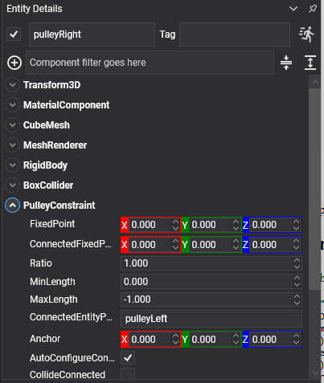

Pulley Constraint
A pulley constraint runs a rope of fixed length from one body, up over a fixed point, across to a second fixed point and down to another body. As one end goes down the other comes up. Counterweights, lifts, drawbridges, a bucket in a well.
This constraint had no equivalent in the previous API.
What it holds
The rope's total length is what stays constant:
distance(bodyA, fixedPoint) + Ratio * distance(bodyB, connectedFixedPoint) = constant
The two fixed points are the pulley wheels, in world space. They are not bodies and nothing has to exist at them, but putting something visible there is usually worth doing, since a rope going over nothing is hard to read.
PulleyConstraint Component

Entity counterweight = new Entity("counterweight")
.AddComponent(new Transform3D() { Position = new Vector3(-1f, 4f, 0f) })
.AddComponent(new RigidBody() { Mass = 40f })
.AddComponent(new BoxCollider())
.AddComponent(new PulleyConstraint()
{
ConnectedEntityPath = "platform",
// The two pulley wheels, in world space, up at the top of the shaft.
FixedPoint = new Vector3(-1f, 8f, 0f),
ConnectedFixedPoint = new Vector3(1f, 8f, 0f),
Ratio = 1f,
MinLength = 0.5f,
});
this.Managers.EntityManager.Add(counterweight);
Properties
| Property | Default | Description |
|---|---|---|
| FixedPoint | 0,0,0 | The pulley wheel this body's end of the rope runs over, in world space. |
| ConnectedFixedPoint | 0,0,0 | The pulley wheel the other body's end runs over, in world space. |
| Ratio | 1 | How much rope the other side takes up for each unit this side takes up. Above 1 this body moves further than the other one and pulls with correspondingly less force: the hauling end of a block and tackle. |
| MinLength | 0 | The shortest the rope may become. |
| MaxLength | -1 | The longest. Negative means "the length it has when the constraint is created", which is the usual case. |
Plus the common properties.
Using Pulley Constraint
A counterweighted lift
// The platform and its counterweight, over two wheels at the top of the shaft. Matched masses make
// the lift neutral: it stays wherever it is left, and a small push moves it.
pulley.FixedPoint = new Vector3(platformX, shaftTop, 0f);
pulley.ConnectedFixedPoint = new Vector3(counterweightX, shaftTop, 0f);
pulley.Ratio = 1f;
Give the counterweight slightly less mass than the platform and the lift settles down; give it slightly more and it rises on its own.
A block and tackle
// Two to one, with the component on the hauling end: this body travels twice as far as the load on
// the other side, and needs half the force to move it.
pulley.Ratio = 2f;
Important
The fixed points are in world space and are captured when the constraint is created. Moving the entity that represents the pulley wheel afterwards does not move the constraint's idea of where the rope runs. Update FixedPoint and call Recreate().
Tip
A pulley is a length limit, not a rope: it stops the two ends going too far apart and does nothing to hold them up. A body whose end of the rope goes slack just falls, which is correct, and is why MinLength is worth setting on anything that could otherwise be pulled all the way into its wheel.